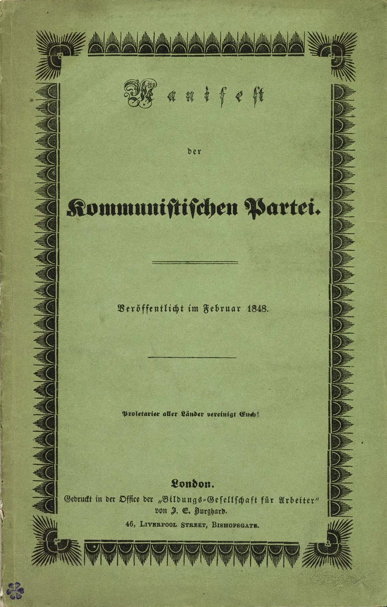

15. gaia · Marx
Marxengan sartzeko
Aurreko atalean susmoaren hiru filosofoak ezagutu genituen (§55): berehalako kontzientziaz mesfidatzen eta haren atzean kausa ezkutu bat bilatzen irakatsi zigutenak. Hiruretako lehenak, Karl Marxek, kapitulu propioa merezi du, eta ez bakarrik bere eraginagatik: Marx ez da susmoaren maisu bat soilik, sistema baten eraikitzailea baizik. §55ean keinu gisa ikusi genuena (kontzientzia ideologia gisa desmaskaratzea) eraikin oso baten punta da harengan, ekonomia, historia eta politika hartzen dituena.
Eraikin hori hiru alditan altxatzen da, eta hala ibiliko dugu guk ere. Lehenik, diagnostiko bat: giza bizitza, kapitalismoaren pean, alienatuta dago (bere buruarengandik bereizita), bai erlijioan, bai, batez ere, lanean (§57). Gero, diagnostiko hori eta, harekin batera, historiaren ibilbide osoa azaltzen dituen legea: materialismo historikoa, zeinetik Marxek pronostiko bat eta proiektu bat ere ondorioztatzen baititu: proletalgoaren iraultza eta gizarte komunista (§58).
Pentsalari gutxik izan dute hainbesteko pisurik XX. eta XXI. mendeen gainean. Haren izenean iraultzak egin ziren, alderdiak sortu ziren eta planeta erdia menderatu zuten Estatuak eraiki ziren; eta kritikatzen dutenek ere (Frankfurteko Eskolak, aurrerago aztertuko dugunak, §68) harekin eta haren aurka pentsatzen dute. Kapitalismoari buruzko haren analisiak irakurria izaten jarraitzen du gaur egun, haren iragarpen asko gezurtatuta geratu diren honetan. Komeni da, horregatik, hasieratik bereiztea Marxen obra eta haren jarraitzaileek harekin egin zutena: balantze batekin itxiko dugu gaia, haren pentsamenduan bizirik dirauena eta denborak baliogabetu duena bereiziko dituena.
§57 · Marx: alienazioa
Susmoaren maisuetan lehena. Karl Marx (1818-1883) Trierren jaio zen, Alemaniako Renanian, eta Hegelen eta Feuerbachen filosofian hezi zen. Kazetaria eta agitatzaile politikoa, hainbat herrialdetatik kanporatua bere ideiengatik, bizitzaren zatirik handiena Londresen eman zuen, pobrezian, Liburutegi Britainiarrean azkeneraino okupatuko zuen obra ikertzen: Kapitala. Haren ondoan, berrogei urtez, Friedrich Engels egon zen, laguna, mezenas eta egilekidea: ekonomikoki eutsi zion Marxi, eta, hura hil ondoren, haren eskuizkribuak ordenatu eta argitaratu zituen. Marxek ez zuen abstraktuan pentsatu: aurrean zuen ikuskizunaren aurka pentsatu zuen, Iraultza Industrialeko Europan proletalgoak bizi zuen miseriaren aurka. Haren diagnostikoaren giltza kontzeptu bat da: alienazioa1, eta komeni da haren ibilbideari jarraitzea, Marx lehenik erlijiotik iristen baita hartara, eta soilik gero ekonomiatik, non baitago haren erroa.

Feuerbach: erlijioa, proiekzio gisa. Marxen abiapuntua Ludwig Feuerbachen (1804-1872) erlijioaren kritika da; Feuerbach ere Hegelen ikaslea zen. Haren tesia formula batean sartzen da: «teologia antropologia da». Gizakiak Jainkoaz hitz egiten duenean, dio Feuerbachek, ez du berez bere buruaz baino hitz egiten. Gure espeziearen ezaugarririk onenak hartzen ditugu (jakinduria, maitasuna, boterea, ontasuna), banako konkretuarengandik bereizten ditugu, infinituraino goratzen ditugu, eta beste izaki bat balira bezala kontenplatzen ditugu, izaki arrotz eta goragoko bat balira bezala. Jainkoa, beraz, giza esentziaren proiekzio bat da: «otoitz egiten dugunean», esango du Feuerbachek, «geure bihotza adoratzen dugu». Erlijioa ez da erabat faltsua, gizakia bere baitako onenarekin harremanetan jartzen baitu; baina alienagarri bihurtzen da esentzia hori gizakiaz kanpo jartzen duenean eta, are okerrago, haren aurka ipintzen duenean, halako moldez non, zenbat eta aberatsago irudikatu Jainkoa, orduan eta pobreago eta miserableago sentitzen baita gizakia. Alienazio hori sendatzea, Feuerbachentzat, gizakiak zeruan proiektatua zuena harentzat berreskuratzea litzateke: gizakiarenganako maitasuna jartzea Jainkoarenganako maitasuna zegoen lekuan.
Marxen kritika: zeruaren kritikatik lurraren kritikara. Marxek bere egiten du Feuerbachen analisia, baina bide erdian geratu izana leporatzen dio. Feuerbachek deskribatu zuen nola proiektatzen duen gizakiak bere esentzia Jainko batengan, baina ez zuen galdetu zergatik egiten duen. Eta horixe da galdera erabakigarria. Marxen erantzuna da gizakia erlijioan alienatzen dela bere benetako bizitzak errealizatzea galarazten diolako: klase-gizarte bat da, injustua eta urratua, haren errealizazioa zapuzten duena, eta lurrak ukatzen dion kontsolamendua irudikatutako zeru batean bilatzera bultzatzen duena. Erlijioa, hala, «herriaren opioa» da2: ez apaizen engainu bat, benetako oinaze baten sintoma baizik. Hortik dator funtsezko ondorio bat: alienazio erlijiosoarekin amaitzeko ez da aski hura salatzea, Feuerbachek egiten zuen bezala; hura sortzen duten baldintza materialak eraldatu behar dira. «Zeruaren kritika, hala, lurraren kritika bihurtzen da; erlijioaren kritika, zuzenbidearen kritika; teologiaren kritika, politikaren kritika.» Horra Marx definitzen duen bira, haren Feuerbachi buruzko tesietako ospetsuenak jada iragartzen zuena: «Filosofoek mundua modu askotara interpretatu baino ez dute egin; kontua, ordea, mundua eraldatzea da.» Erlijiotik, analisia haren errora jaisten da: ekonomiara.
Lana, gizakiaren esentzia. Alienazio ekonomikoa deskribatu aurretik, Marxek finkatzen du zer litzatekeen lan ez-alienatua, hondo horren gainean baino ezin baita neurtu galera. Eta hemen bira bat ematen dio tradizio osoari: gizakia ez da, ezer baino lehen, animalia arrazionala, animalia ekoizlea baizik. Lanak definitzen gaitu; lana, Marxentzat, ez da Bibliako zigorra, gure errealizazioaren bitartekoa bera baizik: natura eraldatzen dugu, gure lagun hurkoekin elkarlanean, gure beharrak asetzeko eta gure proiektuak hedatzeko. Animaliarekiko aldea erabakigarria da. Erleak bere abaraska eraikitzen du, eta armiarmak bere sarea; baina arkitektorik txarrenak gauza batean gainditzen du erlerik onena: eraikina bere buruan altxatu du, eraiki baino lehen. Giza lana, horregatik, antropogenoa da (gizaki egiten gaitu): helburu batekin dihardu, ideia bat gauzatzen du munduan, eta natura gure gorputzaren beraren luzapen bihurtzen du. Horrela lan egitea, aske eta kontzienteki, geure burua errealizatzea litzateke.
Lanaren lau alienazioak. Baina Marxek ez du inon aurkitzen lan hori. XIX. mendeko lantegietan ikusten duena haren kontrakoa da: lan alienatu bat, zeinaren erdigunea jada ez baita langilea, harekiko arrotz den zerbait baizik. Lau era bereizten ditu, guztiak lantegiko langilearen bizitzan presente daudenak:
- Produktuarekiko. Erdi Aroko tailerrean, artisaua egiten zuenaren jabe zen: aulkia egiten zuen eta aulkia saltzen zuen. Lantegi kapitalistan, langileak bere zatia amaitu bezain laster, produktua kendu egiten zaio: ez da harena, lantegiaren jabearena baizik. Langilea ez da bere lanaren fruituaren jabe.
- Ekoizpen-jarduerarekiko. Lanak berak, errepikakorra eta neketsua izaki, sufrimendua sortzen du errealizazioaren ordez. Ez da gizatiartzen duen jarduera sortzailea, jasan egiten den zeregin bat baizik.
- Espeziaren esentziarekiko. Langileak ez du ekoizten bere gaitasunen eta proiektuen arabera, era itsuan baizik, berea ez den helburu baten zerbitzura. Lan alienatuak, hain zuzen, gizaki egiten gintuena deuseztatzen du: dimentsio sortzailea.
- Beste gizakiekiko. Truke ekonomikoak lehiakide bihurtzen ditu lagun hurkoak. Muntaia-kateko laguna ez da kolaboratzaile bat, nire postua har dezakeen aurkari bat baizik.
Emaitza alderantzikatze bortitz bat da: langilea merkantzia soil bihurtzen da kapitalaren eskuetan, eta soilik bere animalia-funtzioak betetzen dituenean sentitzen da aske (jan, lo egin, ugaldu); jarduerarik gizatiarrenean, aldiz, lanean, animaliatua sentitzen da. Zenbat eta aberastasun gehiago ekoitzi, orduan eta pobreagoa da. Alienazio ekonomiko horretatik eratortzen dira gainerakoak: alienazio politikoa, Estatua banakoaren aurrez aurre altxatzen duena, eta jada ezagutzen dugun alienazio erlijiosoa. Eta hartatik dator irtenbidea ere: gizakiari bere lana eta bere gizatasuna itzultzeko, jabetza pribatua eta lan alienatua suntsitu behar dira klase-borrokaren bidez; haren analisia hurrengo atalean zain dugu.
Balioa eta gainbalioa. Zertan datza, zehazki, alienazio horren azpian dagoen ustiapena? Hori erakusteko, Marxek merkantzia analizatzen du. Merkantzia orok erabilera-balio bat du (ematen duen baliagarritasuna) eta truke-balio bat (beste batzuekin trukatzea ahalbidetzen duena), eta azken hori, Marxen arabera, hura ekoizteko sozialki beharrezkoa den lan-kantitatearen arabera neurtzen da. Dirua truke-bide bat besterik ez da, lan hori ordezkatzen duena; baina, erabiltzean, haren jatorria ahaztu egiten dugu, eta berezko balio bat egozten diogu, bere materiagatik balioko balu bezala, eta ez ordezkatzen duen giza lanagatik. Ilusio horri fetitxismoa deitu zion: berez pertsonen arteko harreman bat dena gauzen arteko harreman gisa tratatzen dugu. Puntu erabakigarria iristen da merkantzia hori langilearen lan-indarra denean. Haren balioa, edozein merkantziarena bezala, hura ekoizteko kostuaren parekoa da: langileak bizirauteko behar duena. Baina lan-indarrak ezaugarri paregabe bat du: kostatzen duena baino balio gehiago ekoizten du. Ordu gutxi batzuetan (beharrezko lana) bere soldataren parekoa sortzen du langileak; gainerako orduetan (lan gehigarria), kobratzen ez duen eta kapitalistak poltsikoratzen duen balio gehigarri bat sortzen du. Lapurtutako balio hori gainbalioa da3, eta hor dago, Marxentzat, irabazi kapitalista ororen iturria. Nagusiak bi eratara baino ezin du handitu: lanaldia luzatuz (gainbalio absolutua) edo beharrezko lan-denbora murriztuz makina eraginkorragoen bidez (gainbalio erlatiboa). Langilearen alienazioaren azpian, beraz, ustiapen-mekanismo zehatz batek egiten du taupa. Eta mekanismo hori ez da betierekoa: gizarte-era historiko batena da, kapitalismoarena. Zergatik sortu zen eta zergatik dagoen, Marxen arabera, desagertzera kondenatuta ulertzeko, historiari buruzko haren teoria handia behar da.
§58 · Marx: materialismo historikoa, iraultza eta gizarte komunista
Materialismo historikoa. Funtsezko tesia esaldi bakar batean adierazten da: «Ez da gizakien kontzientzia haien izatea determinatzen duena; alderantziz, haien izate soziala da haien kontzientzia determinatzen duena.» Aurreko filosofia osoaren alderantzikatzea da, hark ideiak egiten baitzituen errealitatearen motor. Marxentzat, ordena kontrakoa da: baldintza materialak dira (gizakiek beren bizitza ekoizteko duten modua) haien ideiak, erakundeak eta kultura determinatzen dituztenak.
Beren existentziaren ekoizpen sozialean, gizakiak harreman jakin, beharrezko eta beren borondatetik independente batzuetan sartzen dira; produkzio-harreman horiek beren produkzio-indar materialen garapen-maila jakin bati dagozkio. Harreman horien multzoak gizartearen egitura ekonomikoa osatzen du: oinarri erreala, zeinaren gainean gainegitura juridiko eta politiko bat altxatzen baita, eta zeinari kontzientzia sozialaren era jakin batzuk baitagozkio. Bizitza materialaren produkzio-moduak baldintzatzen du, oro har, bizitzaren prozesu sozial, politiko eta izpirituala.
—Marx, Ekonomia politikoaren kritikarako ekarpena (1859)
Materialismo hau ez da nahastu behar XVII. eta XVIII. mendeetan ikusi genuen materialismo metafisikoarekin (§40): hura kosmosaren substantziari buruzko tesi bat zen (dena materia dela); hau gizarteari eta historiari buruzko tesi bat da4. Ez du esaten unibertsoa zerez eginda dagoen, baizik eta zerk mugiarazten dituen giza gizarteak.
Azpiegitura eta gainegitura. Marxek bi maila bereizten ditu gizarte orotan. Oinarrian azpiegitura edo egitura ekonomikoa dago: produkzio-indarrak (baliabideak, tresnak, teknika, lana) eta produkzio-harremanak (batez ere, nork dituen produkzio-bideak eta nork ez). Oinarri horren gainean gainegitura altxatzen da, eta bi aurpegi ditu. Bata juridiko-politikoa da: Estatua eta haren legeak. Bestea ideologikoa: kontzientzia-erak deiturikoak (erlijioa, artea, morala, zuzenbidea, filosofia). Eta tesi sendoa hau da: oinarriak gainegitura determinatzen du. Estatua, Marxentzat, ez da epaile neutral bat, menderatze-tresna bat baizik, klase jabedunaren eskuetan: haren legeak, auzitegiak, polizia eta kartzelak jabetza babesteko eta protesta itotzeko existitzen dira. Eta ideologia da diskurtso justifikatzailea, zeinaren bidez klase menderatzaileak natural eta betiereko gisa aurkezten baitu soilik bera mesedetzen duen ordena. Sotilena da klase zapalduak diskurtso hori beretzat hartzen duela. Ikusten ez ditugun betaurreko batzuk bezala funtzionatzen du, haietan zehar begiratzen baitugu: ideologiak, menderatzeko, ikusezina izan behar du. Horrela berreskuratzen dugu, jada bere testuinguruan, §55ek susmo marxiar gisa aurkeztu zuen alderantzizko kontzientzia.

Klase-borroka, historiaren motorra. Ekonomia bada oinarria, historia ekonomia horrek elkarren aurka jartzen dituen klaseen arteko talkaren bidez aurreratzen da. Marxek Manifestua irekitzen duen esaldian aldarrikatzen du:
Gizarte ororen historia, gaurdaino, klase-borrokaren historia besterik ez da. Gizaki askeak eta esklaboak, patrizioak eta plebeioak, jaunak eta jopuak, zapaltzaileak eta zapalduak beti egon ziren aurrez aurre; borroka etengabeari eutsi zioten, batzuetan estalia, besteetan garbia eta agerikoa, eta beti amaitu zen gizarte osoaren eraldaketa iraultzailearekin edo borrokan ari ziren klaseen hondoratzearekin.
—Marx eta Engels, Manifestu komunista (1848)
Mekanismoa honako hau da. Garai bakoitzak produkzio-modu bat du, bere kontraesanekin; produkzio-indarrek hazteko joera dute (batez ere aurrerapen teknikoagatik), harik eta indarrean dauden produkzio-harremanak hazkunde horrentzat oztopo bihurtzen diren arte. Orduan iraultza lehertzen da, eta ordena berri bat jaiotzen da. Horrela aurreratu du historiak jatorrizko komunismo primitibotik, gizarte esklabistatik, feudaletik eta kapitalistatik igaroz, azken komunismorantz. Liberalismoak ordena kapitalista behin betikotzat eta naturaltzat jotzen zuen; haren aurrean, Marxek dio etapa historiko bat gehiago besterik ez dela, aurrekoak desagertu ziren bezala desagertzera deitua (§46). Burgesia, izan ere, klase iraultzailea izan zen bere garaian, ordena feudala eraitsi baitzuen; baina, hori egitean, bere hobiratzailea sortu du. Izan ere, kapitalismoak bi klase antagoniko jartzen ditu aurrez aurre: burgesia, produkzio-bideen jabetza pribatuaren jabea, eta proletalgoa, bere lan-indarra baino ez duena eta hura soldata baten truke saltzen duena.
Kapitalismoaren kontraesanak eta iraultza. Zergatik dago kondenatuta kapitalismoa? Berak berak zorrozten dituen barne-kontraesanengatik. Lehena gainbalioa da (§57): ustiapena ez da zuzendu daitekeen abusu bat, sistemaren funtzionatzeko modu normala baizik. Bigarrena lehiaren dinamika da: merkatu anker batean bizirauteko, enpresa bakoitzak merkeago ekoitzi behar du, eta, horretarako, mekanizatu eta merkatu egiten du; ezin dutenek porrot egiten dute, eta handienek irensten dituzte. Kapitala, hala, gero eta esku gutxiagotan kontzentratzen da, eta proletarioen masa, berriz, hazi egiten da (jabe txiki porrot eginak hartara pasatzen dira). Aberastasuna polo batean pilatzen da, eta miseria bestean. Puntu batera iritsiko da, aurreikusten du Marxek, non miseria hori hain izango baita nabarmena, ezen proletarioei ideologiaren betaurrekoak eroriko baitzaizkie: kontzientzia faltsua desagertu egingo da, eta, haren ordez, klase-kontzientzia sortuko da: sistema osoa haien aurka muntatuta dagoelako ziurtasuna. Orduan proletalgoak bere zapalkuntzan laguntzeari utziko dio, eta, indarrez, produkzio-bideen jabetza hartuko du. Horixe da Manifestua ixten duen dei ospetsuaren zentzua: «Herrialde guztietako proletarioak, elkar zaitezte! Ez duzue ezer galtzeko, zuen kateak izan ezik, eta mundu bat duzue irabazteko.»
Gizarte komunista. Eta gero, zer? Produkzio-bideak komunean hartuta, eta ia denak jada proletario izanik, klaseak desagertu egiten dira; eta klaserik ez dagoen lekuan, ez dago klase-borrokarik. Horrekin batera, Estatua ere desagertzen da: haren funtzioa klase batek beste baten gainean duen nagusitasunari eustea bazen, klaserik gabeko gizarte batek ez du behar, eta iraungitzen uzten du. Produkzio-bideen jabetza jabego pribatu gisa pentsatzeari uzten zaio (Lockek defendatzen zuen jabetza naturalaren aldean, §44); ez gara ari, jakina, bakoitzaren hortzetako eskuilaz, lantegiez eta tresnez baizik: guztionak dira. Eta, kontzientziak beti ekoizpen-ordena islatzen duenez, kontzientzia berri bat jaioko da: lehia eta norberaren interesaren kalkulua desikasiko ditugu, ez baitira giza naturaren betiereko ezaugarriak, kapitalismoaren pean ikasitako ohiturak baizik. Banaketa ez da jada jabetzaren arabera arautuko, justiziaren arabera baizik, lelo bihurtu zen formulari jarraituz5. Gizakiak, azkenean desalienatuta, §57k galtzen deskribatzen zuena berreskuratzen du: lana errealizazio gisa, denbora librea, bere gaitasunen erabateko hedapena. Horrela ixten da alienazioaren diagnostikoak irekitako arkua.
Balantze kritikoa. Marxen analisia gizarteari buruz inoiz egin diren indartsuenetako bat da, eta haren zati handi batek bizirik dirau: ideiek oinarri material eta interesatu bat dutelako ideia, ideologiaren kontzeptua, historia baldintza ekonomikoetatik irakurtzea eta klase-kontzientziaren nozioa bera tresna arruntak dira gaur egun, baita marxistak ez direnentzat ere. Baina, pronostiko gisa eta proiektu gisa, haren pentsamenduak funtsezko objekzioak jaso ditu. Komeni da gogoan hartzea:
- Iragarpena ez zen bete. Marxek proletalgoaren gero eta pobretze handiagoa espero zuen herrialde industrializatuenetan, eta han iraultza. Kontrakoa gertatu zen: sindikatuen, sufragio unibertsalaren, ekonomia keynesiarraren eta ongizate-estatuaren bidez (§71), Mendebaldeko langile-klaseak arrazoizko bizi-maila bat erdietsi zuen. Marxistek erantzuten dute mekanismo horiek kontraesanak atzeratu baino ez dituztela egiten, edo ustiapena ez dela desagertu, munduko eskualderik pobreenetara lekualdatu baizik.
- Antropologia eztabaidagarria da. Sistema osoa giza esentziaren ikuspegi baikor batean bermatzen da (berez kooperatiboak gara, komunismo primitiboak erakutsiko lukeen bezala, eta gizartea da usteltzen gaituena). Haren aurrean liberalismoaren ikuspegi ezkorra dago (berez lehiakorrak eta gatazkatsuak gara), Hobbesengan aurkitu genuena jada (§43). Bien artean aukeratzea ez da zientziak erabaki dezakeen zerbait, eta aukera horren mende dago gainerako guztia.
- Teoria ekonomikoak puntu ahulak ditu. Lanak bakarrik sortzen duela balioa dioen tesia, edo automatizazioak irabazi-tasa eroraraziko zuelako iragarpena, ez dira baieztatu: enpresa automatizatuenak ez dira errentagarritasun txikienekoak, alderantzizkoak baizik.
- Tarte bat dago Marxen eta haren izenean egin zenaren artean. Iraultzak ez zuen garaipenik lortu industria-gizarte aurreratu batean, berak aurreikusten zuen bezala, 1917ko Errusia nekazari eta erdi-feudalean baizik; eta komunistatzat aldarrikatu ziren Estatuak ez ziren izan hark irudikatu zuen Estaturik gabeko gizartearen antzekoak; aitzitik, muturreraino indartu zuten Estatua. Komeni da Marxen obra ez nahastea haren jarraitzaileek harekin egin zutenarekin.
Hala eta guztiz ere, haren indarrak iraun egiten du. XX. mendea pentsaezina da bera gabe, eta pentsalari-leinu luze batek jaso zuen haren ondarea, berrikusteko: Frankfurteko Eskolak (§68) Marx eta Freud (§56) konbinatu zituen, eta ideologiari eta klase-borrokari buruzko haren tesiak kritikapean jarri zituen mende berriaren argitan. Haiengana, eta XX. mendeko gizarte-kritikara, itzuliko gara. Oraingoz, aski da gogoan hartzea, Marxekin eta susmoaren gainerako filosofoekin (§55), arrazoi garden eta subirano batenganako konfiantza modernoa (beren desberdintasunen gainetik, Kantek eta utilitaristek partekatzen zutena, §51, §53) bere krisirik sakonenean sartzen dela.
Alemanez Entfremdung, fremd («arrotz») hitzetik: arrotz bihurtzea. Enajenación ere itzuli ohi da gaztelaniaz. Prozesu hau izendatzen du: geurea den zerbait (gure esentzia, gure lana, haren produktua) arrotz bihurtzen zaigu, eta, azkenean, menderatu egiten gaitu.↩︎
Esaldi osoa, Hegelen zuzenbide-filosofiaren kritikakoa (1844), uste izan ohi dena baino gutxiago da mespretxuzkoa: «Erlijioa kreatura zapalduaren hasperena da, bihotzik gabeko mundu baten bihotza, izpiriturik gabeko egoera baten izpiritua. Herriaren opioa da.» Marx ez da fededunaz burlatzen: fedean benetako sufrimendu baten sintoma ikusten du.↩︎
Gainbalioa hitzak alemanezko Mehrwert itzultzen du: «balio gehiago». Kapitalaren kontzeptu zentrala da, eta pieza horrekin Marxek frogatu egin nahi du (ez moralki salatu) ustiapena kapitalismoaren mekanismoan berean inskribatuta dagoela.↩︎
Horregatik deitzen zaio «materialismo historikoa» edo, Engelsen hitzetan, «historiaren ikuskera materialista». «Materialismo dialektikoa» etiketa, zurrunagoa, geroagokoa da, eta batez ere haren jarraitzaileei zor zaie. Marxek nahiago zuen historia bere oinarri materialetik ulertzeaz hitz egin.↩︎
Gothako programaren kritikakoa (1875). Ez duzu arreta mediko hobea jasoko aberatsa zarelako, gaixo zaudelako baizik; ez duzu ikasiko aberatsen seme-alaba zarelako, gai zarelako baizik. Formulak ugaritasunaren gizarte bat deskribatzen du, non lana zama izateari utzi eta lehen bizi-behar bihurtu baita.↩︎